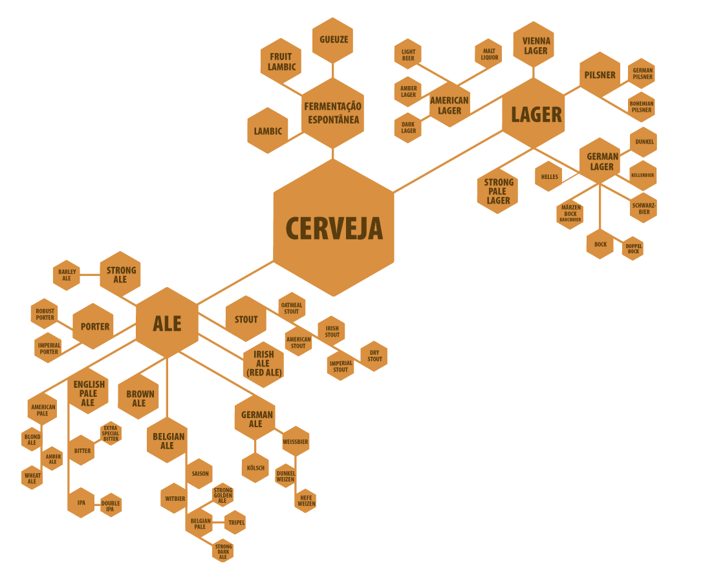

Muito provavelmente você foi enganado e não bebe uma pilsen. Calma e vem que a gente explica.
As Pilsens ou Pilsners nasceram por volta do século 19 na antiga região da Bohemia, onde hoje se localiza a República Tcheca. Acredita-se que Josef Groll seja o idealizador da primeira cerveja Pilsen e que ele tenha utilizado o lúpulo Saaz, conhecido por trazer um toque apimentado em seu sabor.
A receita fez tanto sucesso entre imigrantes alemães que logo começou a se popularizar por toda a Europa, e todo esse sucesso no antigo continente faria a Pilsner uma cerveja popular ao redor do mundo.
Onde se encaixam as Pilsen?
Existem 3 grandes grupos de cerveja, as Ales, Lagers e de fermentação espontânea. Por enquanto não falaremos das cervejas de fermentação espotânea, que como o próprio nome diz, fermentam de forma espontânea, sem adição de leveduras específicas de cervejas. Faremos uma matéria sobre elas mais para frente, não se preocupem.
A diferença entre as famílias das Ales e Lagers é a temperatura de fermentação, onde as Ales são conhecidas como cervejas de alta fermentação (entre 18 e 22°C) e as Lagers de baixa fermentação (entre 7 e 15°C ). E é na família das Lagers que se encontra a Pilsen, sendo assim toda Pilsen é uma Lager mas nem toda a Lager é uma Pilsen.
O processo de fabricação das Lagers é muito similar entre si, e acabam utilizando um tipo específico de levedura. E como a temperatura para fermentar esse tipo de cerveja é mais baixa do que outros estilos, as leveduras aqui tendem a decantar e fermentar a cerveja do fundo do barril. Isso traz uma característica de sabor bem suave e mais neutra nessas cervejas.
Para uma cerveja ser considerada Pilsen, ela primeiro deve ser puro malte, isso significa que apenas cereais maltados são utilizados em sua produção.

Fonte: www.prazdroj.cz
Outro aspecto marcante é sua coloração dourado escuro muito peculiar. Além disso, o aroma e amargor são mais pronunciados nesta cerveja, sem falar do sabor característico do lúpulo checo Saaz. Seu teor alcóolico pode ficar entre 4,5% a 5,2% e o amargor varia de 25 a 45 IBU (unidades internacionais de amargor).
O motivo da confusão no Brasil
Infelizmente no Brasil muitas das cervejas que estampam “cerveja pilsen” em seus rótulos, não possuem uma verdadeira Pilsen. Basta ler nas primeiras linhas de ingredientes que iremos achar a palavra cereais não maltados ou não malteados. O que já descaracteriza uma pilsen, sem contar nas outras características que abordamos anteriormente.
Essa prática de adicionar outros cereais na fabricação tem a função principal de baratear o custo de produção. Isso não é necessariamente ruim, apenas que estamos falando de outro tipo de cerveja, também da família das lagers. Nesse caso a grande maioria das cervejas, se trata de uma American Lager possuindo um sabor ainda mais neutro e leve do que as Pilsners.